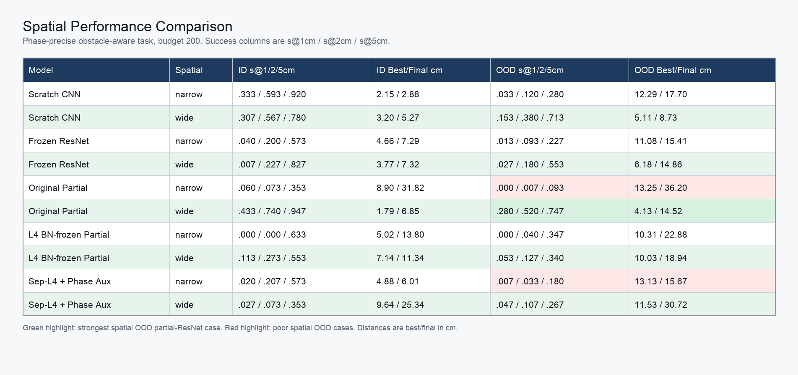

Model Comparison
Scratch CNN, frozen ResNet-18, and partially fine-tuned ResNet-18 under ID/OOD evaluation.
Encoder takeaway. Pretrained ResNet features are not automatically better in this simulated manipulation setting. Scratch CNN is often the strongest precision model; frozen ResNet is sometimes stronger at loose thresholds; partial fine-tuning is inconsistent and can be unstable.
Overall Budget 50 and 200 Comparison
Budget 50 is multi-seed. Budget 200 is seed-0 only, but it is useful for seeing whether more demonstrations rescue each model family.
| Budget | Split | Model | Rollouts | S@1cm | S@2cm | S@5cm | Best cm | Final cm |
|---|---|---|---|---|---|---|---|---|
| 50 | ID | Frozen ResNet-18 | 7,200 | 19.4% | 50.2% | 95.1% | 2.7 | 22.1 |
| 50 | ID | Partial ResNet-18 | 7,200 | 5.4% | 17.9% | 61.0% | 4.6 | 26.0 |
| 50 | ID | Scratch CNN | 7,200 | 39.4% | 64.3% | 87.1% | 2.7 | 39.5 |
| 50 | OOD | Frozen ResNet-18 | 7,200 | 8.5% | 26.7% | 73.6% | 4.8 | 23.8 |
| 50 | OOD | Partial ResNet-18 | 7,200 | 4.6% | 14.8% | 51.9% | 6.2 | 26.5 |
| 50 | OOD | Scratch CNN | 7,200 | 30.6% | 54.7% | 78.5% | 4.4 | 40.4 |
| 200 | ID | Frozen ResNet-18 | 2,400 | 45.5% | 52.0% | 94.4% | 2.4 | 21.3 |
| 200 | ID | Partial ResNet-18 | 2,400 | 35.2% | 54.8% | 66.9% | 5.7 | 29.7 |
| 200 | ID | Scratch CNN | 2,400 | 43.0% | 77.0% | 96.2% | 1.5 | 35.6 |
| 200 | OOD | Frozen ResNet-18 | 2,400 | 13.8% | 31.5% | 80.4% | 4.2 | 23.0 |
| 200 | OOD | Partial ResNet-18 | 2,400 | 19.0% | 35.0% | 55.8% | 7.6 | 26.5 |
| 200 | OOD | Scratch CNN | 2,400 | 43.5% | 63.7% | 86.6% | 3.0 | 37.3 |
OOD Budget Curves by Model
The scratch curve improves the most at high budget, but final distance remains large. Frozen ResNet has reasonable loose success but lower precision. Partial ResNet does not provide a stable monotonic improvement.
| Model | Budget | Rollouts | S@1cm | S@2cm | S@5cm | Best cm | Final cm |
|---|---|---|---|---|---|---|---|
| Frozen ResNet-18 | 5 | 7,200 | 7.7% | 22.6% | 58.5% | 6.5 | 25.7 |
| Frozen ResNet-18 | 20 | 7,200 | 4.8% | 23.7% | 64.8% | 6.3 | 26.4 |
| Frozen ResNet-18 | 50 | 7,200 | 8.5% | 26.7% | 73.6% | 4.8 | 23.8 |
| Frozen ResNet-18 | 100 | 2,400 | 12.9% | 24.6% | 78.1% | 4.8 | 23.1 |
| Frozen ResNet-18 | 200 | 2,400 | 13.8% | 31.5% | 80.4% | 4.2 | 23.0 |
| Partial ResNet-18 | 5 | 7,200 | 0.4% | 3.4% | 22.5% | 10.8 | 30.5 |
| Partial ResNet-18 | 20 | 7,200 | 1.3% | 5.2% | 33.0% | 9.3 | 27.9 |
| Partial ResNet-18 | 50 | 7,200 | 4.6% | 14.8% | 51.9% | 6.2 | 26.5 |
| Partial ResNet-18 | 100 | 2,400 | 8.7% | 22.3% | 61.5% | 5.7 | 28.0 |
| Partial ResNet-18 | 200 | 2,400 | 19.0% | 35.0% | 55.8% | 7.6 | 26.5 |
| Scratch CNN | 5 | 7,200 | 21.6% | 51.3% | 79.4% | 4.5 | 39.5 |
| Scratch CNN | 20 | 7,200 | 26.1% | 58.0% | 80.0% | 4.2 | 46.4 |
| Scratch CNN | 50 | 7,200 | 30.6% | 54.7% | 78.5% | 4.4 | 40.4 |
| Scratch CNN | 100 | 2,400 | 31.5% | 59.0% | 77.8% | 4.1 | 41.0 |
| Scratch CNN | 200 | 2,400 | 43.5% | 63.7% | 86.6% | 3.0 | 37.3 |
Spatial Performance Snapshot

Interpretation
- Scratch CNN. Best overall precision in many visual-only settings and strongest high-budget OOD curve, but spatial obstacle-aware behavior remains weak.
- Frozen ResNet-18. Helps some loose success rates and is less catastrophic than partial fine-tuning in the edge-balanced visual-only setting, but precision remains limited.
- Partial ResNet-18. The most unstable family. In this simulated setting, fine-tuning later blocks did not reliably solve the mismatch between visual features and control-relevant geometry.